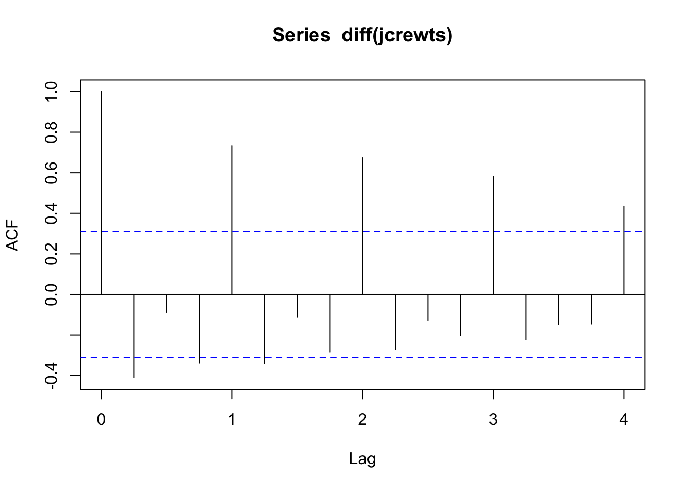
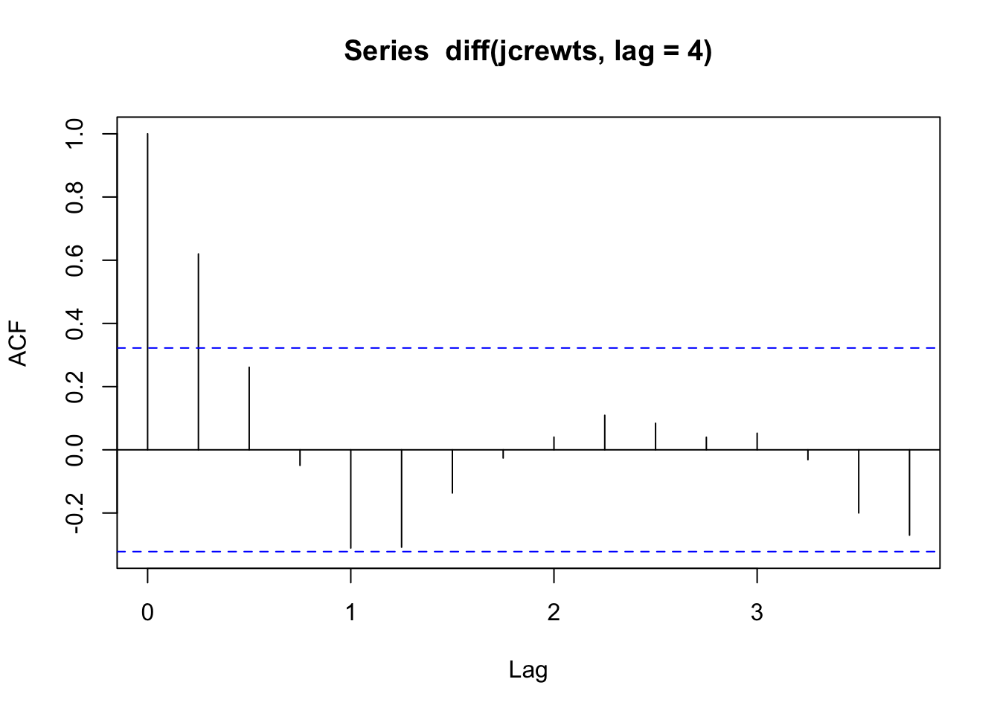
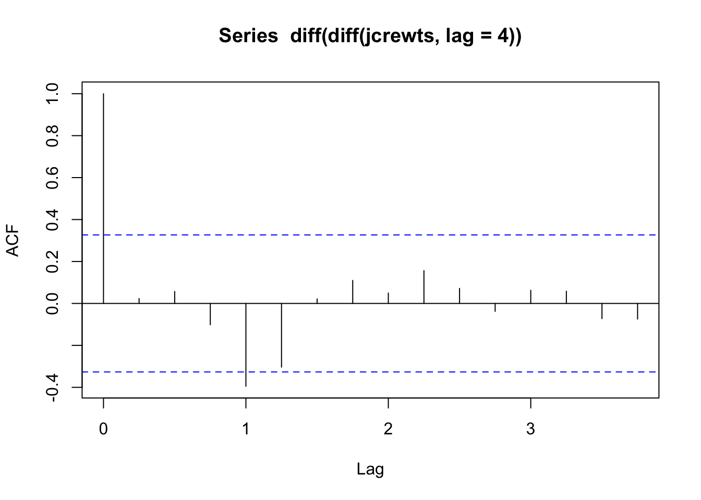
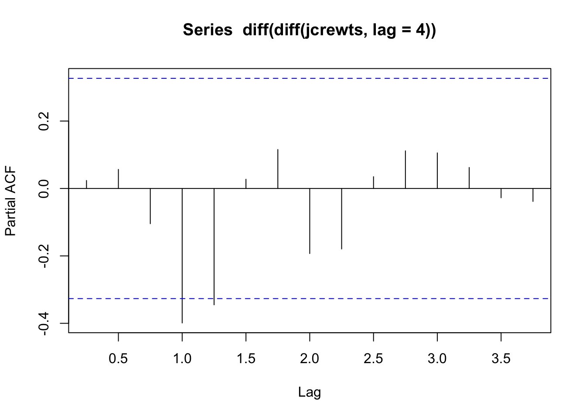
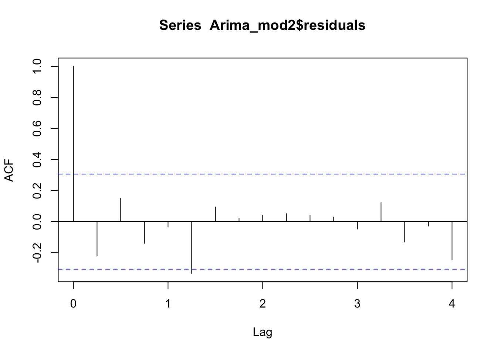

── Conflicts ────────────────────────────────────────── tidyverse_conflicts() ──
✖ dplyr::filter() masks stats::filter()
✖ dplyr::lag() masks stats::lag()
ℹ Use the conflicted package (<http://conflicted.r-lib.org/>) to force all conflicts to become errors
jcrew <-read_csv("data/jcrew.csv")
Rows: 41 Columns: 5
── Column specification ────────────────────────────────────────────────────────
Delimiter: ","
dbl (5): Quarter, Year, Period, Revenue, Time
ℹ Use `spec()` to retrieve the full column specification for this data.
ℹ Specify the column types or set `show_col_types = FALSE` to quiet this message.
jcrew$t<-c(1:length(jcrew$Revenue))
The data is quarterly revenue reports (in millions of dollars) for J. Crew from Q1 2003 through Q1 of 2013. There are 41 observations and the data came from the DASL website.
In the ACF plot we can see a gradual decay in the lags. There are significant lags at lags 1,2, and 3. Note that lag 4 is close to being significant with a t-statistic of 1.98.
Seasonal Means + Linear Trend Model
Lin_mod<-lm(Revenue ~ t+factor(Quarter), data = jcrew)summary(Lin_mod)
Call:
lm(formula = Revenue ~ t + factor(Quarter), data = jcrew)
Residuals:
Min 1Q Median 3Q Max
-42.249 -13.219 0.622 10.436 58.582
Coefficients:
Estimate Std. Error t value Pr(>|t|)
(Intercept) 117.3896 9.0933 12.909 4.49e-15 ***
t 10.1321 0.2933 34.541 < 2e-16 ***
factor(Quarter)2 2.3185 9.6978 0.239 0.812
factor(Quarter)3 12.9264 9.6933 1.334 0.191
factor(Quarter)4 61.6443 9.6978 6.357 2.33e-07 ***
---
Signif. codes: 0 '***' 0.001 '**' 0.01 '*' 0.05 '.' 0.1 ' ' 1
Residual standard error: 22.18 on 36 degrees of freedom
Multiple R-squared: 0.9725, Adjusted R-squared: 0.9694
F-statistic: 318.3 on 4 and 36 DF, p-value: < 2.2e-16
anova(Lin_mod)
Analysis of Variance Table
Response: Revenue
Df Sum Sq Mean Sq F value Pr(>F)
t 1 601348 601348 1221.821 < 2.2e-16 ***
factor(Quarter) 3 25244 8415 17.097 4.543e-07 ***
Residuals 36 17718 492
---
Signif. codes: 0 '***' 0.001 '**' 0.01 '*' 0.05 '.' 0.1 ' ' 1
The acf plot of the residuals shows a significant spike at lag 2 which may be a concern. Assessment of effectiveness \(\sigma = 25.67\)
\({R}^2 = 96.22%\)
SSE = 24381
MSE = 659
Seasonal Arima
acf(diff(jcrewts))

acf(diff(jcrewts, lag =4))

Due to the decreasing lags in the ACF plot a regular difference seems like it would be beneficial.When a regular difference is added to the time series, there is still significant lags at the 4S lags. This suggests a seasonal difference would also be beneficial.
acf(diff(diff(jcrewts, lag =4)))

pacf(diff(diff(jcrewts, lag =4)))

With both differences applied, there is still a significant lag at lag 4 in the ACF and PACF plots. Our initial guess for the ARIMA due to this information is an ARIMA(0,1,0)X(1,1,0) or an ARIMA(0,1,0)X(0,1,1).
Arima_mod1<-Arima(jcrewts, order =c(0,1,0), seasonal =c(1,1,0))summary(Arima_mod1)
Series: jcrewts
ARIMA(0,1,0)(1,1,0)[4]
Coefficients:
sar1
-0.5062
s.e. 0.1604
sigma^2 = 428.6: log likelihood = -160.25
AIC=324.51 AICc=324.87 BIC=327.68
Training set error measures:
ME RMSE MAE MPE MAPE MASE ACF1
Training set 2.946087 19.12705 13.9319 1.039103 3.999047 0.3100633 -0.225162
Arima_mod2<-Arima(jcrewts, order =c(0,1,0), seasonal =c(0,1,1))summary(Arima_mod2)
Series: jcrewts
ARIMA(0,1,0)(0,1,1)[4]
Coefficients:
sma1
-0.6442
s.e. 0.1838
sigma^2 = 402.3: log likelihood = -159.59
AIC=323.19 AICc=323.55 BIC=326.36
Training set error measures:
ME RMSE MAE MPE MAPE MASE ACF1
Training set 3.341989 18.53136 13.83724 1.169022 3.964772 0.3079566 -0.2225015
Due to the smaller sigma squared value in the second ARIMA model (402.3 compared to 428.6) this model would be better for our data.
acf(Arima_mod2$residuals)

The acf plot of the residuals for our ARIMA model confirms that the residuals are independent and there are no significant lags.
ts.plot(jcrewts,Arima_mod2$fitted, col =c("blue", "red"))
The ARIMA(0,1,0)X(0,1,1) works best for our J. Crew data. It has the lowest \(\sigma\) (20.06) and MSE(402.3), as well as the highest R-squared value (97.81). It also only has 1 parameter, making it the model with the lowest number of parameters of our three models. This is also the favorable model because the ACF plot of the residuals looks like white noise, which is not the case for the seasonal means or cosine models.